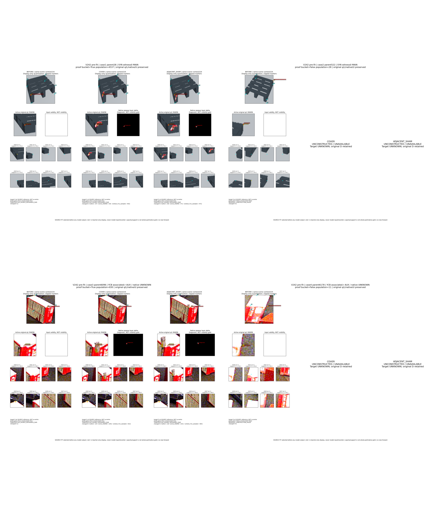
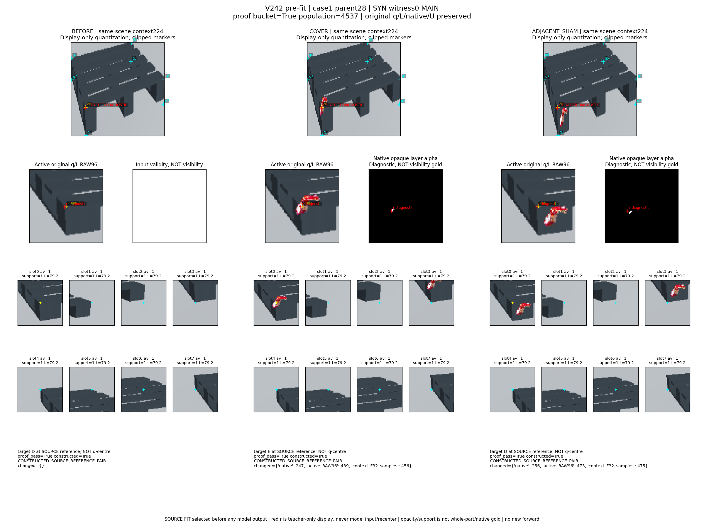
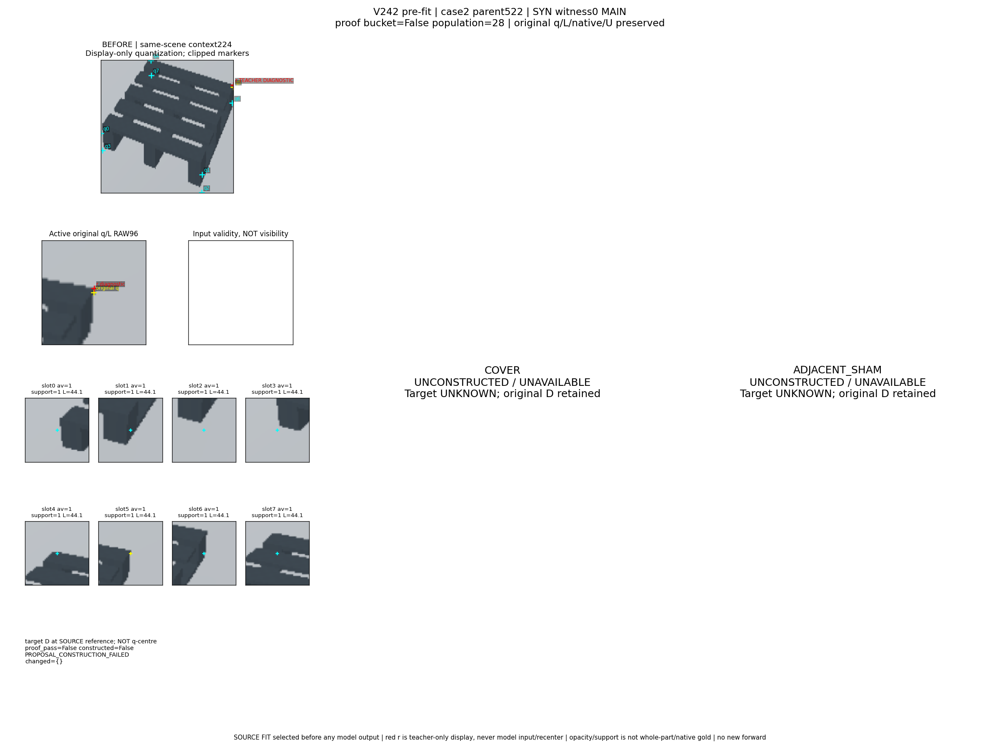
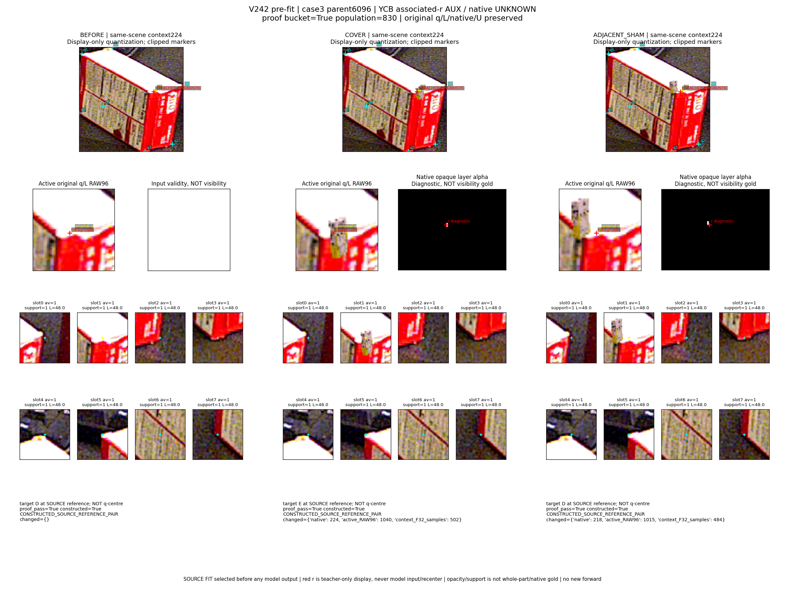
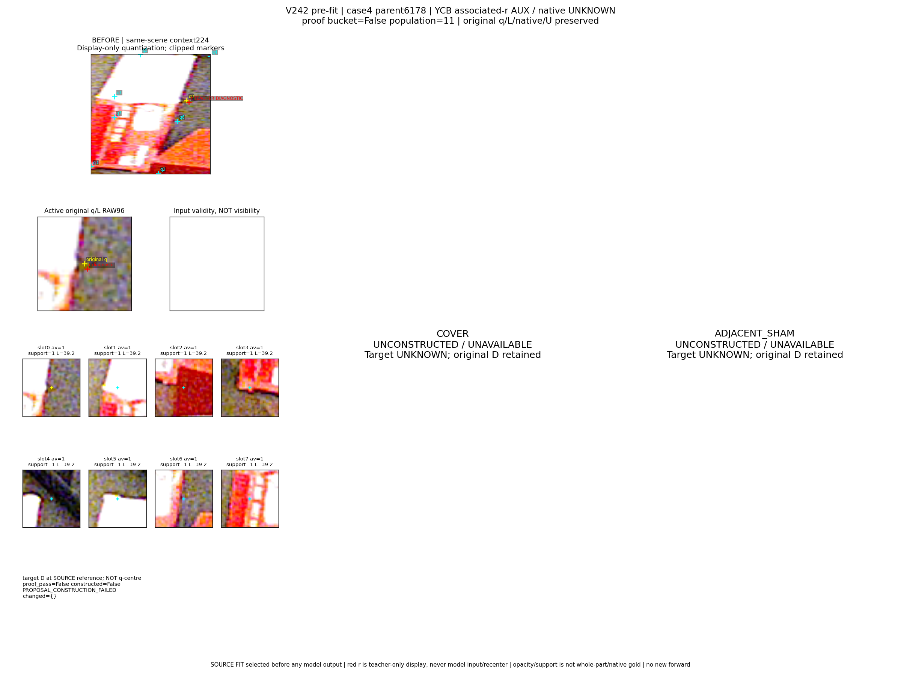

Family x renewed proof PASS/UNKNOWN minimum original parent index. Empty buckets preserved. No model outputs or case substitution. Original q/L/native/U unchanged; red r is teacher-only diagnostic overlay, never a model input or recrop. SOURCE synthetic teacher footprint is not literal q-centre presence, whole-part or native gold.
IDs sealed before pixels · cases CSV · proof/identity details




